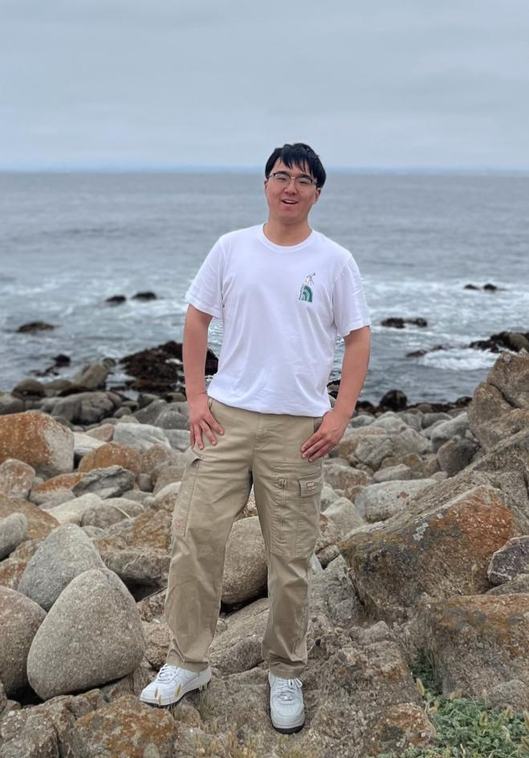

|
Wuao Liu (刘武傲) I am a Computer Science Ph.D. student working in the Computer Vision Lab at UMass Amherst, advised by Prof. Grant Van Horn. Previously, I received my M.S. and B.Eng. degrees in Robotics from University of Michigan, Ann Arbor and Zhejiang University, respectively. My research leverages computer vision and machine learning for applications in AI4Science. I currently focus on visual and auditory recognition of fine-grained categories, such as wildlife species, to support biodiversity monitoring and conservation efforts. If you are interested in any kinds of collaboration, please feel free to send me an email!
Email: wuaoliu[at]umass[dot]edu |
 |
{kind=link}
News
Show/Hide old news
|
Work Experience |
|
Honda Research Institute US
Research Scientist Intern May 2025 - Aug 2025 Host: Nirav Savaliya and Goro Yeh |
|

|
Tencent AI Lab
Machine Learning Engineer Intern Jun 2021 - Aug 2021 Host: Peilin Zhao and Mingyang Sun |
Selected Publications |
|
|
Audio Geolocation: A Natural Sounds Benchmark
Mustafa Chasmai, Wuao Liu, Subhransu Maji, Grant Van Horn Under Review, 2025 project page / code / arXiv Using a vision-inspired approach, we tackle the novel challenge of predicting the geographic location of audio recordings by leveraging species sounds and multimodal retrieval techniques. |
|
|
Can Large Language Models Reason About Goal-Oriented Tasks?
Filippos Bellos, Yayuan Li, Wuao Liu, Jason J. Corso ACL Workshop, 2024 project page / video / pdf We study how well LLMs can complete a sequence of steps to achieve a certain goal, such as making a sandwich or repairing a bicycle tire. |
|
Last update: Sep. 2025 |
|
Thanks to Jon Barron for providing this amazing template. |